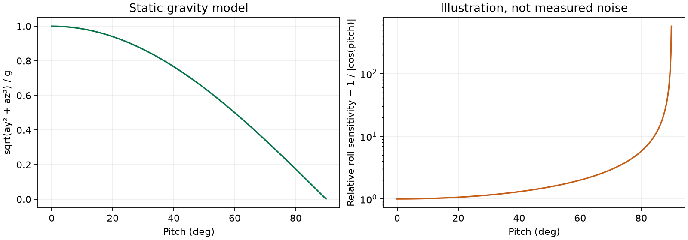

IntelQCopter · Engineering note 01 · 30 October 2026
Why can an angle jump
when the drone tilts?
One measured recording, one geometric explanation, and a readable account of the plotting fix.
Result. The corrupted title and misleading automatic angle zoom were corrected. Large-tilt warnings were added. This changes presentation, not the physical attitude estimator. The current preview uses calibrated acceleration to estimate gravity tilt; gyro fusion is still the next step.
1 · What the recorded data tells us

1166 diagnostic records were compared with independently recomputed angles. Maximum differences were below 0.001 degrees, consistent with printed rounding. Pitch reached89.573degrees. This verifies the logged computation, not true physical attitude: no independent orientation reference was recorded.
| Actual hardware evidence | Limit |
|---|
| ESP32-S3, MPU6050, calibrated preview serial log | No motors/PID; no physical flight acceptance |
| Angle values match the acceleration formulas | Movement can make acceleration differ from gravity |
| Original data preserved; no refitting | Physical axis direction is still provisional |
2 · The geometry, step by step
Calibrated aₓ, aᵧ, a_z→ gravity-angle formulas→ serial D record→ live plot + warnings
roll φ = atan2(aᵧ, a_z)
pitch θ = atan2(−aₓ, √(aᵧ² + a_z²))
aₓ, aᵧ, a_z are calibrated accelerometer components in the candidate drone frame, measured in m/s²; φ and θ are the displayed angles. atan2(y,x) determines an angle with quadrant information; results are converted from radians to degrees. In the ideal stationary convention used by these formulas:
aₓ = −g sin θ
aᵧ = g sin φ cos θ
a_z = g cos φ cos θ
√(aᵧ² + a_z²) = g |cos θ|
g≈9.80665m/s² is reference gravity. These ideal relationships assume gravity dominates, correct mounting/frame interpretation and negligible translation. At rollφ=90° and pitchθ=0°, aᵧ≈g: pitch remains well-conditioned. At pitchθ→±90°, both aᵧ and a_z approach zero: their ratio no longer reliably tells us roll. Small measurement changes then produce large roll changes.

δφ ≈ (a_z δaᵧ − aᵧ δa_z) / (aᵧ² + a_z²)
δ denotes a small change; the denominator explains why roll sensitivity grows near vertical pitch. This is the local derivative of atan2, not a measured noise law. It does not imply that every reported fluctuation has this cause. Euler roll also wraps at±180°, which can draw a jump across the plot.
3 · What changed in the code
Expand a line to understand its punctuation, numbers and effect. Examples are spaced for reading; expressions match the implemented changes. No calibration coefficient was changed in this fix.
fig.suptitle('Calibrated gravity tilt preview - motors disabled')
fig.suptitle('Calibrated gravity tilt preview - motors disabled')
fig is the Figure object; . selects its method; suptitle is the whole-figure title. Parentheses call it. Quotes delimit a string. The ASCII hyphen avoids the previously corrupted dash. It is not subtraction inside this string. The title change does not alter sensor data.
axes[0].set_ylim(-180, 180)
axes[0].set_ylim(-180, 180)
axes is the list/array of plot panels; [0] selects the first (Python indexes start at zero). .set_ylim calls the vertical-limit method. -180 is a negative number; comma separates lower and upper arguments. The closing parenthesis ends the call. Units are degrees because those are the plotted values; the method does not convert units. Fixed limits prevent tiny resting noise from being enlarged by automatic vertical scaling.
status = axes[0].text(0.01, 0.98, 'Waiting for data', transform=axes[0].transAxes, va='top', fontsize=9)
status = axes[0].text(0.01, 0.98, 'Waiting for data', transform=axes[0].transAxes, va='top', fontsize=9)
= assigns the returned Text object to status. The first two arguments locate it at 1% of the panel width and 98% of its height because transform=axes[0].transAxes selects panel-relative coordinates. Decimal points form floating-point numbers. Keyword=value arguments name options: va='top' anchors the top of the text at that position; fontsize=9 sets point size. This text moves with the panel, not with the data scale.
roll, pitch = float(fields[8]), float(fields[9])
roll, pitch = float(fields[8]), float(fields[9])
fields is the comma-split serial record, including 'D' at index0. [8] and [9] select roll and pitch, as defined by the firmware D record. float(...) converts each numeric string to a floating-point number. The comma on each side makes a pair: Python assigns the first converted value to roll and the second to pitch. This is not a new angle estimator.
norm = sum(float(fields[i])**2 for i in (2, 3, 4))**0.5
norm = sum(float(fields[i])**2 for i in (2, 3, 4))**0.5
fields[2:5] are ax, ay, az in m/s² (the slice is explanatory; the actual code uses the tuple (2,3,4)). for i in (...) generates one term per selected index. ** means exponentiation: each acceleration is squared; sum adds all three squares; **0.5 takes their square root. Thus norm = sqrt(ax² + ay² + az²). Parentheses group operations and call functions; dots in 0.5 denote a decimal, unlike the method-access dot. No vector direction survives in this norm.
warning = 'Near vertical pitch: roll is poorly observable from gravity' if abs(pitch)>80 else 'Gravity tilt only - axes provisional'
warning = 'Near vertical pitch: roll is poorly observable from gravity' if abs(pitch)>80 else 'Gravity tilt only - axes provisional'
This is a conditional expression: choose the first string if the condition is true, otherwise choose the string after else. abs removes the sign of pitch. > tests strictly greater than80degrees; it does not assign a value. 80 is a display-warning threshold chosen before the singularity, not a calibrated physical limit and not a flight control setting.
if abs(norm-9.80665)>1.5: warning += ' | Acceleration disturbance'
if abs(norm-9.80665)>1.5: warning += ' | Acceleration disturbance'
if tests a condition; : introduces its body (here on the same line). norm-9.80665 subtracts reference gravity in m/s². abs makes deviations in either direction positive. >1.5 compares to a heuristic 1.5m/s² tolerance. += appends text to the existing warning string; it does not add acceleration. The vertical bar is a visual separator inside the quotes. This is only a suspicion indicator: some motion has norm near g, and calibration error can also alter the norm.
status.set_text(warning)
status.set_text(warning)
Call the saved Text object's set_text method with the selected message. No Serial command is sent and no angle value is replaced.
for buf, v in zip(history, [time.monotonic()-started, roll, pitch, float(fields[12])*57.295779513]): buf.append(v)
for buf, v in zip(history, [time.monotonic()-started, roll, pitch, float(fields[12])*57.295779513]): buf.append(v)
for loops through paired items. zip pairs the four history buffers with four values in the same order. [] constructs that list. time.monotonic() is a host clock unaffected by wall-clock corrections; subtracting started gives receive-time seconds. fields[12] is body Z angular velocity in rad/s; *57.295779513 converts it to deg/s (180/pi). Each deque receives one value through .append(v); its maxlen=300 keeps only the latest300 rows. This rate is a body Z rate, not generally the derivative of Euler yaw at large tilt. The timestamp is host receipt time, not the sensor's sampling instant.
for ax in axes: ax.relim(); ax.autoscale_view()
for ax in axes: ax.relim(); ax.autoscale_view()
axes[0].set_ylim(-180, 180)
The for iterates panels. : starts the body; ; separates two statements on the compact line. relim recomputes the data bounds; autoscale_view uses those bounds for eligible axes. The next line resets the angle limits after that update, while time and the lower rate panel may still autoscale. The fixed limits help visual interpretation; they do not suppress noise, clipping or Euler wrapping.
Earlier window fix: choose an interactive Qt backend
os.environ['QT_QPA_PLATFORM_PLUGIN_PATH'] = str(Path(PyQt5.__file__).parent / 'Qt5/plugins/platforms')
os.environ['QT_API'] = 'pyqt5'
matplotlib.use('QtAgg', force=True)
import matplotlib.pyplot as plt
os is Python's operating-system module. .environ is a mapping of this process's environment variables; ['name'] chooses a key and = sets its string value for this process and its children, not permanent system settings. Path(...) constructs a filesystem path from PyQt5.__file__, the installed module filename; .parent selects its directory; / appends a relative path (Path overloads this operator, so here it is not numeric division). str converts the Path object to text. QT_API chooses PyQt5 as the Qt binding. matplotlib.use calls the backend selector; 'QtAgg' combines a Qt interactive window with Agg rendering. force=True requests selection explicitly; True is Python's Boolean literal. This must happen before pyplot creates figures. import loads a module; as plt gives pyplot a short local name. Without an installed interactive binding, Agg alone can render files but cannot show a window. This backend correction was the earlier plot-opening fix, independent of the angle mathematics.
4 · Why the title had random symbols
The original long dash became mojibake when UTF-8 text was decoded and rewritten using a Windows legacy encoding during generation. The source then contained the wrong characters. The title now uses an ASCII hyphen, and source-file processing explicitly uses UTF-8. Matplotlib was drawing the string it received; changing the sensor could not fix that title.
5 · What remains to implement
Combine gyro prediction with accelerometer corrections. An internal quaternion avoids the Euler-coordinate singularity in state propagation, but cannot make Euler angles unique at their singular pose or remove accelerometer disturbances by itself. This note introduces the problem; it does not claim a fused estimator has already been validated.
Provenance: source plot revision c5d6966; actual recording 20261030T221524; hardware source/analysis identities and raw-log SHA256 are in evidence.json. Diagnostic rows are nominally 10 Hz; charts are not 1000 Hz raw attitude ground truth. Geometry figure is an analytic ideal model, not a second experiment. Original logs remain private and preserved.